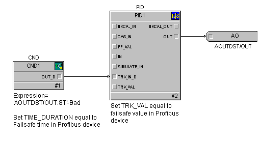

Using Profibus DP, DeviceNet, AS-Interface and EIOC with DeltaV function blocks
The following sections provide information for configuring Profibus DP, DeviceNet, AS-Interface, and EIOC devices with AI, AO, DO, PID and DC function blocks.
Analog signal scaling for AI and AO function blocks
If you check Use Scaling in the Properties dialog for a Profibus and DeviceNet analog signal, the associated AI or AO function block ignores its XD_SCALE parameter during block execution and the system uses the scaling values defined for the signal. If the Use Scaling check box is not checked in the signal's Properties dialog, the corresponding function block uses the scaling values defined in its XD_SCALE parameter. For an AI function block, set the L_TYPE parameter to Indirect and configure the OUT_SCALE parameter's range and units configured accordingly.
Special considerations for writing output signals
If you are writing output signals to a Profibus, DeviceNet, AS-Interface, and EIOC device that has been configured for faultstate action, be sure your control module is configured to track the faultstate action in the device should it occur. For example, if communication between the DeltaV system and the device is disrupted the device itself may drive its outputs to a fault state. The DeltaV system must know this has occurred and take appropriate action so that outputs are not driven to the last good state by the DeltaV system when communication with the device is restored. Configure your control module so that this happens, because the Profibus, DeviceNet, AS-Interface, and EIOC standards do not support readback of output values.
Profibus DP, DeviceNet, AS-Interface, and EIOC output signals should be written in control modules by means of an external reference parameter, which writes the value to the I/O card even when signal status is Bad. If you use a Profibus DP, DeviceNet, AS-Interface, or EIOC DST reference in function blocks such as AO, DO, PID, and DC the value is not written when signal status is Bad. It is important for the control module to be able to write the faultstate value to the I/O card when the Profibus DP, DeviceNet, AS-Interface, or EIOC device is in the fault state, to prevent a bump when the fault state has cleared.

Similarly, if you use an EIOC DST reference in function blocks, the value is not written when signal status is Bad. It is important for the control module to be able to write the faultstate value to the I/O card when the EIOC is in the fault state to prevent a bump when the fault state has cleared. The following image shows one way to create such a control module with an analog output DST with PID, Condition, and Off-delay Timer function blocks for use with the EIOC.

If your Profibus DP, DeviceNet, AS-Interface or EIOC device goes to a fault state due to a failure in the device or a loss of communication with the DeltaV system, the status of its DSTs in the DeltaV system is Bad. The following shows a technique for analog outputs using a DeltaV PID function block. A condition function block detects Bad status in the output DST and, after the faultstate time duration, causes the PID block output to track the faultstate value in the device. After the fault state in the device clears, the PID block initializes from the faultstate value.
The following figure shows a similar technique for a discrete output using the Device Control function block. The condition block is used in the same way as in the figure. In this case the DC block becomes interlocked to the 0 (passive) state when the device goes to the fault state. When the fault state clears, SP_D and CAS_IN_D are in the passive state, and can be written to the active state at the appropriate time.
The previous figure illustrates using the condition block when you are writing the discrete output with boolean or expression logic. Whether the output is maintained or pulsed, the idea is to be sure the output is the device faultstate value when the device is in the fault state.